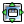

|
|
Metadynamics Analysis Panel |
This panel analyzes a metadynamics calculation and displays a plot of the free energy as a function of the collective variables (CVs) used for the calculation. You can analyze calculations with one or two collective variables.
To open the Metadynamics Analysis panel:
Choose Applications → Desmond → Metadynamics Analysis in the main window.
Specify the output config file (-out.cfg) of the
metadynamics job that you want to use for the analysis. Enter the file name in
the text box, or click Browse and navigate to the
file.
When the file is opened, the analysis starts. It may take a minute or two for the analysis to run. When it finishes, the plot is displayed.
Note: If you started your metadynamics run from Maestro, the analysis is performed as part of the job. You can load the analysis results by using the Read Plot Data button.
The toolbar provides tools for manipulation of the plot and for saving an image of the plot. This is a generic toolbar, and some of the actions may not be useful in the current context. The toolbar buttons are described below.
 |
Reset Reset the plot to the original pan and zoom settings. |
| Back Display the previous view of the plot in the view history. |
|
 |
Forward Display the next view of the plot in the view history. |
| Pan/zoom Pan the plot with the left mouse button, zoom with the right button. |
|
 |
Zoom to rectangle Drag out a rectangle on the plot to zoom in to that rectangle. |
|  | Configure subplots Configure the margins and spacing of each plot in the panel. |
 |
Edit axis and curve parameters Make settings for the title, range, labeling, and scale of the axes; the color, style, and width of lines; and the color, style, and size of markers. |
| Save image Save an image of the plot to file. Opens a file selector in which you can browse to a location, select the image format, and name the image. |
The plot is displayed in this area. If one variable was used in the metadynamics calculation, a line plot is displayed. If two variables were used, a contour plot is displayed, colored according to the values of the free energy, with a color legend to the right of the plot. The values of the coordinates and of the function are displayed above the plot when the pointer is in the plot area.
Show grid lines on the plot.
Add an offset to the free energies value so that the minimum value displayed is zero. This allows you to examine the relative free energies.
Choose the units to use for angles and dihedrals, from radians or degrees.
Read the plot data from an analysis. Opens a file selector, in
which you can navigate to and select a file. The file extension is
.fes (for Free Energy Surface). When you run a metadynamics job
from Maestro, the analysis is done automatically.
Write the plot data to a file. Opens a dialog box, in which you
can name the file, which is written with the extension .fes (for
Free Energy Surface).
|